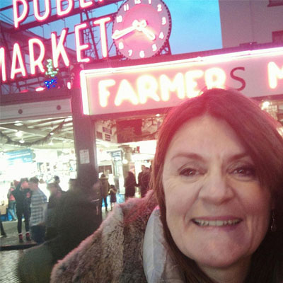

About Me
What I'd Like You To Know:
I bring a lot of different hats to the table. My Resume is extensive. I obtained my Computer Science Degree 20 years ago, in Galway RTC, Ireland. After 2 year Cobol programmer role I landed in SAP. I spent 7 years working in large ERP companies installing and upgrading SAP systems on multiple hardware, OS and DB platforms.
My freelance company Deewhy Consultants LLC has brought me from Sydney in Aussie to Dungarvan, Ireland and now to Boston and Portsmouth NH. In 2008, I decided to return to a programming / creative role and started working on Website and hosting services for clients with my programmer partner. My largest client was DAA (Dublin Airport Authority) which was a very large E-commerce site for Dublin Airport called theloop.ie for 4 years. I developed static and e-commerce sites, gaining experience in client training, wireframes, project management, CSS, HTML, Javascript, Node JS, mySQL, Joomla, Wordpress, Typo3, Photoshop, AWS, Github, Trello. I regularly enjoyed working closely with clients making their businesses visable online.
In 2016 I moved to Portsmouth NH in the US and decided to network and learn latest Javascript frameworks by taking part in a 6 month UNH Fullstack Dev Course. This was a full time commitment and lead me to my first US client, a global company Mobile Programming LLC, where I am currently enjoying working. So far I've been creating Angular5 SVG Chart Apps. and am involved in several Fullstack Agile projects. In my spare time I have created Fullstack React Apps for my kids local schools (my favourite is Chatterdox, a Watson IBM Speech to Text reading Lab). I am passionate about kids, education and tech.
Interesting Facts:
- I have recently (2016) moved here from Ireland, Co. Waterford, Dungarvan.
- I can speak Irish (Gaelic), play the Tin Whistle and Clasical Guitar, although not all at the same time!
- I spent 15 years in a marching Band called Pheonix Youth Band, traveling all over Ireland, and 3 years in the Royal College of Music, and obtained Grade V in classical Guitar and Trombone
- I have travelled to 20 countries.
- I studied for 3 years as a Naturopath in Australia
- I once spent 3 days locked in a room coding a Pascal Printing App.
- My passions are travelling, guitar, technology, hiking, music, food as medicine, my kids and family.
My Fav Apps:
- Whatsapp - for keeping in touch with my family at home in Ireland
- Choremonster - to manage my kids!
- Mothership - to manage my kids
- Slack - for work
- Seesaw - viewing school activities
- Twitter - love hearing about new technologies
- Facebook - am no longer allowed use it as I get lost for hours!
- Spotify - could not live without it
- Sign-up Genius - for organising anything
- Personal Capital - for reviewing all my accounts, spending and monitoring budgets in one place
- GitHUB, Trello, Google Drive for every day working!
Technology prediction - what will take over in the next 10 years:
VR! The scope for live concerts, ball games, and of course shopping..